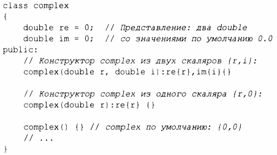

⇐5.1.2 Преобразования типов Содержание 5.2 Копирование и перемещение⇒
При определении члена данных класса ему может быть предоставлен инициализатор, именуемый инициализатором члена по умолчанию. Рассмотрим версию класса complex (§4.2.1 ):
Когда конструктор не предоставляет значение, используется значение по умолчанию. Это упрощает код и помогает избежать случайного оставления члена без инициализации.